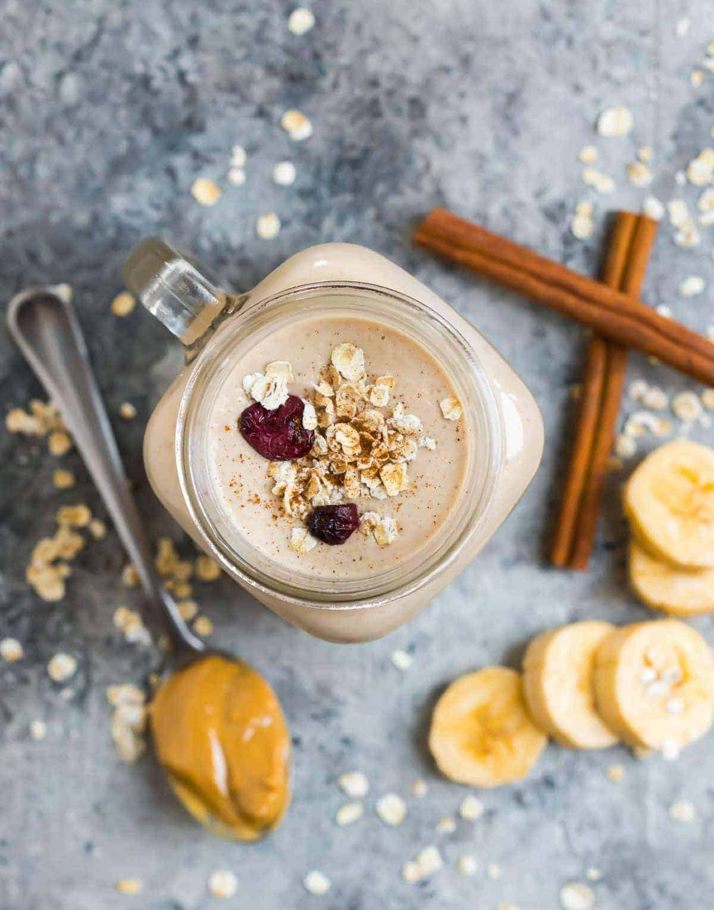

Back to Main page
Oat Smoothie

Made with easy ingredients like bananas, peanut butter, and cinnamon, its cozy flavor and creamy texture trigger sensations of comfort, all while fueling my body for a healthy day ahead.
Ingredients
- 1/4 cup old-fashioned oats or quick oats
- 1 banana chopped into chunks and frozen
- 1/2 cup unsweetened almond milk
- 1 tablespoon creamy peanut butter
- 1/2tablespoon pure maple syrup plus additional to taste
- 1/2 teaspoon pure vanilla extract
- 1/2 teaspoon ground cinnamon
- 1/8 teaspoon kosher salt
- Ice
Instructions
- Place the oats in the bottom of a blender and pulse a few times until finely ground
- Add the banana, milk, peanut butter, maple syrup, vanilla, cinnamon, and salt.
- Blend until smooth and creamy, stopping to scrape down the blender as needed.
- Taste and add additional sweetener if you’d like a sweeter smoothie. Enjoy immediately.